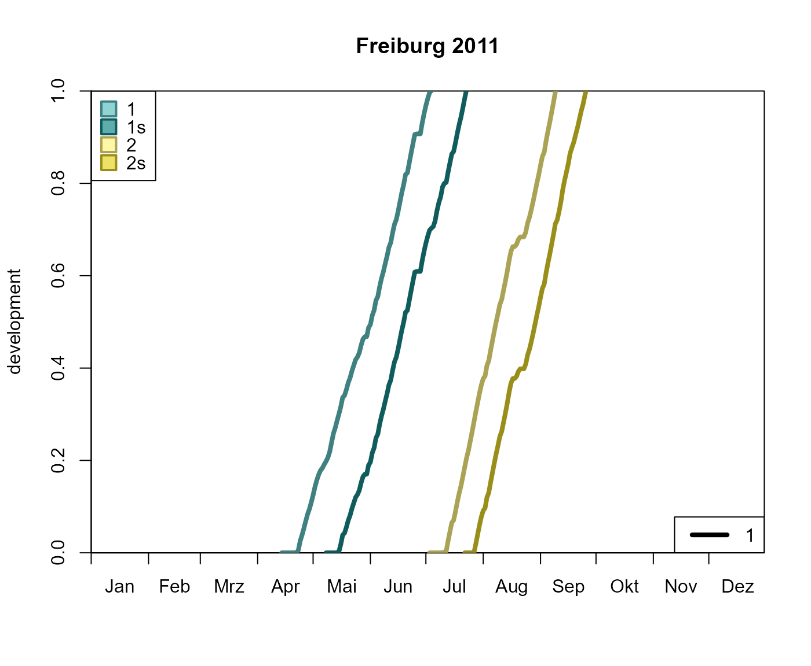

Generate onset, diapause or mortality manually to be able to run phenology()
with observed or arbitrary inputs.
Usage
create_onset(
template,
doys = NULL,
stations = NULL,
dates = NULL,
.quiet = FALSE
)
create_diapause(
template,
doys = NULL,
stations = NULL,
dates = NULL,
.quiet = FALSE
)
create_mortality(
template,
doys = NULL,
stations = NULL,
dates = NULL,
.quiet = FALSE
)Arguments
- template
SpatRaster or data frame that determines the spatial and temporal extent of the result. If a single-layer SpatRaster was passed, the temporal extent should be defined by using
dates.- doys
Numeric vector, (multi-layer) SpatRaster or data frame that specifies the days of year when the event is triggered. Vectors will define the events globally whereas SpatRasters allow spatially explict definitions. For the creation of events based on stations, data frames are used. In that case, the field
stationspecifies the station name anddoyindicates the respective day of year.- stations
If
templateis a SpatRaster anddoysis a data frame, stations should be passed to define which cells are affected. Seestations_create()for details.- dates
Dates to define the temporal extent of the output if
templateis a single-layer SpatRaster.- .quiet
If
TRUE, messages are suppressed.
Functions
create_onset(): Create a onset.create_diapause(): Create a diapause.create_mortality(): Create mortality events.
Examples
# \donttest{
# load sample data
d <- barrks_data('stations')
# create onset, diapause, mortality
on <- create_onset(d, lubridate::yday('2015-04-15'))
dia <- create_diapause(d, lubridate::yday('2015-08-15'))
mort <- create_mortality(d, lubridate::yday('2015-11-15'))
# claculate phenologe
p <- phenology('phenips-clim', d, .quiet = TRUE,
.onset = on, .diapause = dia, .mortality = mort)
# plot development
plot_development_diagram(p, .lwd = 4)

# }